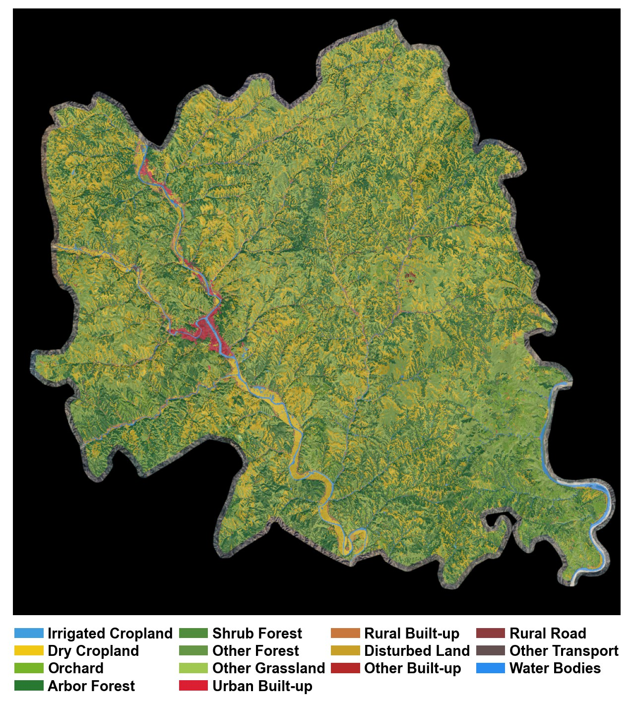
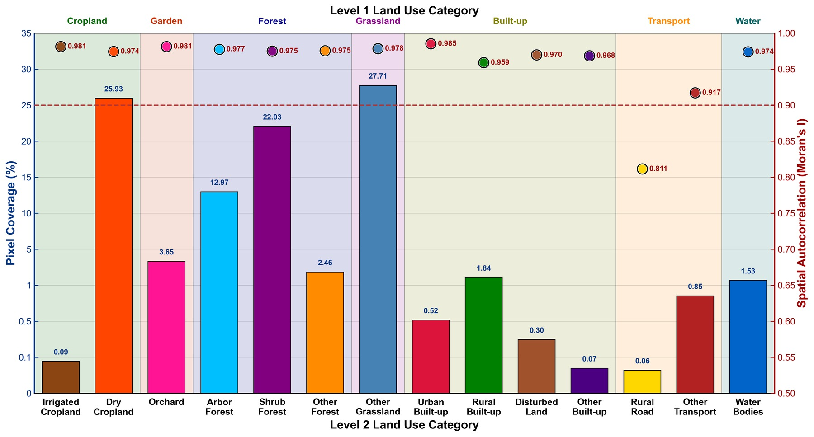
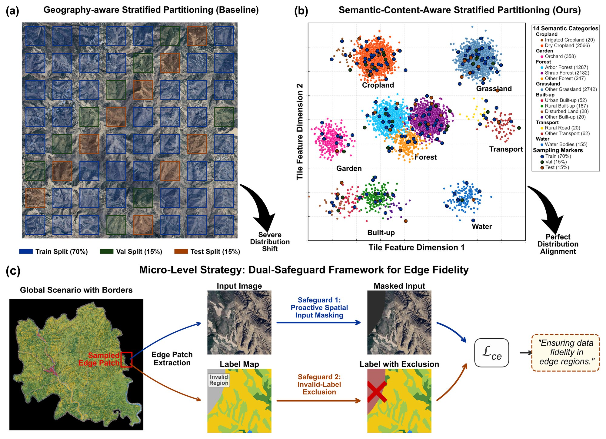
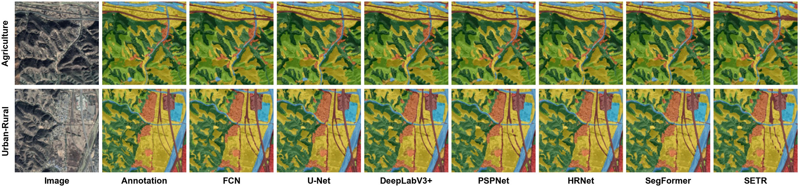
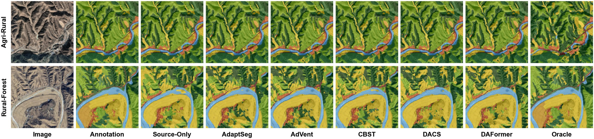

A pixel-level semantic segmentation dataset for land use / land cover mapping of the Loess Plateau, built under a continuous-region survey paradigm that preserves complete spatial structure and exposes Spatially Clustered Imbalance.
Xidian University · Yulin University · and collaborating institutions

A rigorous testbed for hierarchical supervised segmentation and unsupervised domain adaptation — built where models actually break.
Existing remote-sensing segmentation datasets are predominantly scene-centric: by curating geographically isolated tiles, they disrupt spatial continuity and weaken the structural complexity of complete geographic entities. Models tuned on such idealized benchmarks often degrade sharply when deployed in continuous real-world landscapes.
LoessScape instead preserves the complete spatial organization of a representative Loess Plateau region through a semantic-content-aware stratified partitioning strategy — making it possible to study how spatial distribution shift, structural autocorrelation, and class imbalance interact in the wild.
Complete geographic entities and their spatial autocorrelation are preserved, not fragmented by isolated sampling.
Geometrically thin minority classes are persistently siloed inside dominant, strongly autocorrelated terrains.
Both Level-1 (7) and Level-2 (14) tasks, plus unsupervised domain adaptation under spatial distribution shift.
A landscape-ecology lens that surfaces the Landscape-Error Paradox and characterizes Spatial Siege.
Every tile is output at 512×512 px, but each scale reads a different-sized window from the source image — sharing the same upper-left anchor so tiles pair across scales.
Anchor-aligned windows. Same top-left point, different field of view.
| Scale | Train | Val | Test | Total |
|---|---|---|---|---|
scale_1_0.5 | 2,265 | 481 | 490 | 3,236 |
scale_1_1 | 2,321 | 493 | 497 | 3,311 |
scale_1_2 | 2,335 | 503 | 503 | 3,341 |
| All scales | 6,921 | 1,477 | 1,490 | 9,888 |
A two-level hierarchy based on the China national standard GB/T 21010-2017. Swatches are the official mask color palette. NoData = 255 marks areas outside the study-area boundary.

Other Grassland outweighs the rarest class, Rural Road, by a pixel-frequency ratio of ~436:1 — coverage spans more than two orders of magnitude.
Every class is strongly autocorrelated: even minority classes are not scattered noise — they form persistent, cohesive patches.
Thin minorities (roads, urban) are siloed inside dominant terrains, making them invisible to globally-pooled crops at training time.
A semantic-content-aware partitioning aligns class distributions across train / val / test, and a dual-safeguard framework preserves label fidelity at tile boundaries.

Tiles are stratified by semantic content, not by raw geographic grid — so every split sees the same mix of cropland, forest, built-up, water, etc.
Edge tiles around the study-area boundary are protected by input masking and invalid-label exclusion, so ‘NoData’ never contaminates the loss.
Train / val / test ratios held constant across all three scales while preserving spatial autocorrelation within each split.
Qualitative predictions from representative models. Geometrically thin minority classes and class boundaries remain persistently difficult — the hallmark of Spatially Clustered Imbalance.


Archived on Zenodo with a permanent DOI. Released under CC BY-NC-SA 4.0.
images.zipmasks.zipmetadata.zipclass_info.json, dataset_info.json, per-split *_info.jsonREADME.mdLICENSEMD5SUMS.txtLoessScape/ ├── images/ # scale_1_0.5 | scale_1_1 | scale_1_2 │ └── <scale>/ → {train, val, test}/ ├── masks/ # same structure as images/ ├── metadata/ # class_info · dataset_info · split_info ├── README.md └── LICENSE # Tile name format {scale}_{split}_{row}_{col}_{tileID}.tif
If you use LoessScape in your research, please cite both the paper and the dataset.
@article{wang2026loessscape,
title = {LoessScape: A Continuous-Region Land-Cover Benchmark for Semantic
Segmentation under Spatially Clustered Imbalance},
author = {Wang, Junjie and Jiang, Ping and Liu, Gang and Liu, Hanye and
Xu, Lihui and Liu, Sijun and Lei, Xin},
year = {2026},
note = {Preprint}
}
@dataset{wang2026loessscape_data,
title = {LoessScape: A Multi-Scale Semantic Segmentation Dataset
for Loess Plateau Land Use},
author = {Wang, Junjie and Jiang, Ping and Liu, Gang and Liu, Hanye and
Xu, Lihui and Liu, Sijun and Lei, Xin},
year = {2026},
publisher = {Zenodo},
doi = {10.5281/zenodo.20340667},
url = {https://doi.org/10.5281/zenodo.20340667},
note = {Licensed under CC BY-NC-SA 4.0}
}